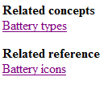

While relationship tables can vary depending on your needs, this task describes how to make a typical topic-type link table. You can use this type of table to link concepts with their related tasks and references. The table contains three columns, one for each type of topic. However, not every column needs to be filled out as topics don't always need to be linked to each information type. The other types of tables are described in What does @linking do?.
Open your DITA map in your Editor area.
Position your cursor at the end of the document just before the last <map> element tag.
Insert a relationship table by choosing any of the following methods:
Right-click and select Relationship Table > Insert Relationship Table.
Note: While it is possible to add a <reltable> element in the same way you add any other element (that is, through the Elements list), doing so only adds the tags, but does not generate a table, nor does it open up the dialog window.
In the Insert Relationship Table window, do the following:
(optional) Adjust the table size to three columns.
(optional) Fill out a table title.
Note: The title you give to your table will not appear above it, but can be viewed in the @title attribute.
Select Generate table header.
Click Insert.
Fill out the header of your table: enter 'concept', 'task' or 'reference' as values for the @type attribute of the <recolspec> element of each column.
Notice: Be sure not to capitalize the values, as Oxygen will no longer recognize them.
Add topic references to the topics you want linked in your relationship table.
Tip: You can copy the <topicref> elements from your DITA map into the relationship table to quickly add references.
In your generated output, related links will be created automatically. Depending on the values you have entered in the table header, they will be titled under the header 'Related concepts', 'Related tasks' or 'Related references'.

Note: If you leave the values blank, the header will read 'Related information'.